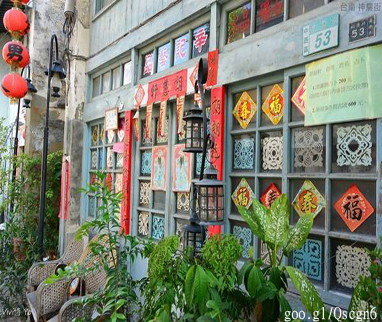

人文特色 台南是古都府城，台灣最早發展的富庶之地，歷史與人文緩緩的淬煉出城市的生活步調和文化深度，呈現在街頭小吃、廟宇、老街古宅之中，這些在地老店及街景，皆充滿著一股人文氣息的古城風情，而人情物意彷彿都隱藏著令人玩味的小故事，也都是府城鮮活的生活民情與文化特色。 Read More
觀光景點 講到台南的觀光景點，就會讓人想到安平古堡、孔廟、赤崁樓、知事官邸這些人氣觀光景點，台南保存許多日治時期的建築及產業：公家機關、鹽業、糖業、 老街及紀念空間等。在台南市政府用心的規劃下，以建築為主軸，讓古蹟復甦帶來無限生機，為台南打造出許多的古蹟新地標， 除了帶動商機以外也可以保護先人所留下的古文明建築，讓我們的歷史能夠代代相傳源源不絕。 Read More
美食導覽 臺灣最早開發的台南市是全島最具代表性的小吃文化重鎮，小吃與歷史古蹟搭配的主題旅遊是該市重要的觀光資源。台南的地方小吃因具有便宜、地方性強、及具有特殊風味等特色，所以特別受到重視，小吃不僅是維持生活基本需求，最重要的是帶給遊客愉快的休閒感。 Read More
精選住宿 近年來，人們生活壓力大、寄託方式多，好的生活品質是明顯趨勢，加上觀光旅遊的興盛讓民宿、飯店等逐漸增加。走在台南大街小巷，可以輕而易舉的找到休憩的地方，在如此競爭的情況下，具有優美的環境、寬敞的空間及完善的設備等，已成為旅客住宿最基本的條件。 Read More
旅遊規劃 由於近年來政府實行週休二日的政策連續假期特別多，想必有不少人已經開始計畫旅遊行程想到處去大玩特玩了旅遊雖然有趣，但事前的旅遊規劃卻非常繁雜耗時，在此介紹「Bring You」、「台南旅遊景點美食懶人包」兩個好用的行程規劃網站，讓你可以輕鬆愉快的規劃好玩、好吃又有趣的行程。 Read More
 後記● 在製作網站過程中本團隊學習及認識到豐富多樣的台南歷史、風情及美食，每個類別都有我們實地探勘及採訪的足跡，不足之處即以網路查詢精選內容介紹給您，目的就是希望能夠帶給每位到訪的旅客更加便利快速的導覽台南風光及規劃行程，希望我們的用心可以帶給您更多的便利與實用。 Read More